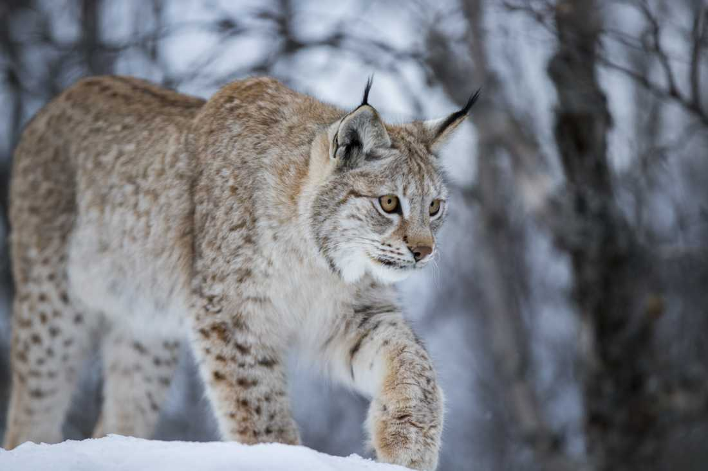

LODJUR
Ett skyggt skogsdjur
Lodjur är skygga, ensamlevande skogsdjur som trivs särskilt bra i bergig och brant terräng. De håller revir, områden som de försvarar mot andra lodjur. Reviret ”doftas in” med urinmarkeringar. Ett lodjurs hemområde varierar mellan 3 och 7 kvadratmil, större i norra Sverige än i Bergslagen, och större för hannar än för honor. Det viktigaste bytesdjuret är rådjur, men lodjuret anpassar sina matvanor efter tillgången. I renskötselområdena äter det mest renar, särskilt under vintern. I områden med lite rådjur är harar och skogshöns (tjäder, ripa, orre) vanliga byten. Ett lodjur som jagar smyger försiktigt fram mot bytet. När avståndet är 20 till 30 m attackerar det blixtsnabbt. Större byten dödas med ett bett i strupen, mindre med ett bett i nacken. Om anfallet misslyckas ger lodjuret snart upp jakten, och väntar istället på nästa chans.
Känslig för jakt
Vid sekelskiftet fanns det nästan inga lodjur kvar i Sverige. Under en period av fridlysning 1927 till 1942 återhämtade sig stammen, och vid 1980-talets början fanns det lodjur i nästan hela landet. Alltför hård jakt i kombination med rävskabb är troligen orsak till nedgången. Idag finns lodjuret i alla landskap utom på Öland och Gotland. Men söder om en linje Dalsland-Värmland-Västmanland-Norra Uppland föds det få, eller inga, ungar. Det sker en spridning söderut, med cirka 3-4 mil per år. Det motsvarar den sträcka honorna behöver röra sig för att komma till nästa ”lediga” hemområde! Trots att lodjuret är fridlyst förekommer det illegal jakt, särskilt i områden där snöskoter underlättar uppspårandet.
Läs mer på WWF